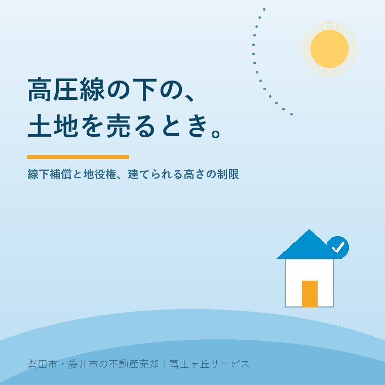

2026年8月15日｜カテゴリ：地域と不動産／コスト・税・制度

この記事の要点
Q. 実家の畑と庭の上を、高圧線が通っています。こういう土地って、売れるんでしょうか。値段は下がりますか。
A. 売れます。ただし「上を通っているだけ」ではなく、土地に権利が設定されていることが多いので、そこを先に確認してください。送電線が上空を通る土地には、電力会社の地役権や区分地上権が登記されていることがあり、これは登記事項証明書の権利部（乙区）を見れば分かります。価格については、建てられるものに制限がかかる分、更地としての評価は下がる方向に働きます。相続税の世界でも同じ考え方が採られていて、国税庁は家屋の建築が全くできない場合は50％と借地権割合のいずれか高い割合、家屋の構造・用途等に制限を受ける場合は30％を自用地価額から控除できると示しています。確認の順番は、①登記簿の乙区に何が入っているか ②電力会社との契約書に高さや工作物の制限がどう書かれているか ③補償料が誰の口座に入っているかの3つです。磐田市・袋井市・森町では、介護施設の運営から不動産事業を始めた富士ヶ丘サービスのような「介護×不動産」専門の会社に相談するという選択肢があります。
ご実家の敷地の上を、太い電線が横切っていませんか。
近くに鉄塔が立っていて、そこから何本もの線が伸びている。畑の真ん中に鉄塔の足がある。庭から空を見上げると、電線が斜めに視界を横切っていく。磐田市の郊外、田畑と住宅が混じり合う地域では、めずらしい風景ではありません。
向陽学府──大藤・向笠・岩田の三つの小学校区が令和8年4月に一つの向陽小学校になった、あの一帯もそうです。平地と丘、田畑と住宅地が近い距離に並んでいる場所では、送電線は生活の風景の一部になっています。
ところが、いざご実家を売る段になると、この電線が急に「不動産の話」として立ち上がってきます。買主から「上に線が通ってますよね」と聞かれ、答えに詰まる。そこから話が止まってしまうご相談を、私は何度か受けてきました。
今日は、送電線が上を通る土地について、売る前に確認しておくことを順番に整理します。制度の部分は、2026年8月15日時点で経済産業省・国税庁・法務省が公表している内容に沿って書きます。
誤解されやすいところから始めます。送電線は、他人の土地の上を勝手に通っているわけではありません。
電力会社は、送電線を架けるにあたって、その下の土地の所有者と契約を結びます。多くの場合、地役権という権利を設定します。地役権は民法第280条に定めのある権利で、条文はこう書かれています。
地役権者は、設定行為で定めた目的に従い、他人の土地を自己の土地の便益に供する権利を有する。（民法第280条）
送電線の場合は、「電線を架設し、その支障となる工作物を設置しない」といった内容の地役権が設定されるのが通例です。土地の上空を使わせてもらう代わりに、地上に建てられるものを制限する。これが線下地の基本的な構造です。
権利の形は地役権とは限りません。区分地上権という、土地の一定の層（この場合は上空）だけを目的とする権利が設定されていることもあります。いずれにせよ、それは登記されているはずの権利です。
いちばん確実なのは、登記事項証明書を取ることです。法務省の説明によれば、登記記録は表題部と権利部に分かれ、権利部（甲区）には所有権に関する事項が、権利部（乙区）には所有権以外の権利に関する事項が記録されます。抵当権設定、地上権設定、そして地役権設定は、いずれも乙区です。
乙区の話は、以前ローンが残っている実家、売れますかでも書きました。抵当権を見に行くのと同じ場所に、送電線の地役権も載っています。
見るポイントを挙げます。
| 見る欄 | 確認すること |
|---|---|
| 登記の目的 | 「地役権設定」「区分地上権設定」などの記載があるか |
| 目的 | 「電線路の架設」「送電線路の敷設」といった記載。ここに制限の内容が書かれていることがある |
| 範囲 | 土地の全部か一部か。一部なら図面（地役権図面）が別にある |
| 権利者 | 電力会社の名称。ここが交渉と照会の相手になる |
ただし、登記されていない場合もあります。契約だけがあって登記がされていないケース、あるいは古い経緯で書面が残っていないケース。この場合は、電力会社に直接照会するのが早道です。鉄塔の脚部や電柱に番号板が付いていることが多く、その番号を伝えると照会が進みやすくなります。
ここが、この記事でいちばん誤解の多いところです。
「高圧線の下だから2階建てまで」といった一律の建築規制は、建築基準法にはありません。制限の出どころは、電気設備の技術基準と、電力会社との契約です。
経済産業省の電気設備の技術基準の解釈には、第97条【35,000Vを超える特別高圧架空電線と建造物との接近】という条文があります。ここに、送電線と建造物の造営材との間に確保すべき離隔距離が定められています。
使用電圧が170,000V以下の場合、97-1表が適用されます。一般的な送電線で使われる裸電線（ケーブルでも特別高圧絶縁電線でもないもの）は、表の「その他」に当たり、離隔距離は（3＋c）メートル以上とされています。
この c は、表の備考にこう定義されています。
c は、特別高圧架空電線の使用電圧と35,000Vの差を10,000Vで除した値（小数点以下を切り上げる。）に0.15を乗じたもの（電気設備の技術基準の解釈 97-1表 備考）
実際に計算してみます。
| 使用電圧 | c の計算 | 離隔距離（裸電線の場合） |
|---|---|---|
| 66,000V | (66,000−35,000)÷10,000＝3.1 → 切上げ4 → 4×0.15＝0.6 | 3.6メートル以上 |
| 154,000V | (154,000−35,000)÷10,000＝11.9 → 切上げ12 → 12×0.15＝1.8 | 4.8メートル以上 |
170,000Vを超える送電線については、同条第一項第二号により、民間規格評価機関である日本電気技術規格委員会が承認した規格によるものとされています。
また、同条第5項には「特別高圧架空電線が建造物の下方に接近する場合は、相互の水平離隔距離は3m以上であること」という定めもあります。上下だけでなく、横方向の距離も見られているということです。
大事な点を書きます。この技術基準は、電線を架ける側（電気事業者）が守るべきルールであって、土地所有者に対する建築規制ではありません。
ではなぜ土地に制限がかかるのか。電力会社は、この離隔距離を将来にわたって確保しなければならないからです。そのために、土地所有者との契約や地役権で「一定の高さを超える工作物を設置しない」という約束を取り付けます。制限の根拠は法律ではなく契約にある──ここを取り違えると、買主への説明で話がずれます。
したがって、実際に何メートルまで建てられるかは、契約書と地役権の登記内容を見ないと分かりません。電線の高さ、地形の高低差、電線のたわみ具合によっても変わります。「電線の直下だから建てられない」と決めつける前に、まず書面を確認してください。
地役権や区分地上権が設定されているとき、電力会社から土地所有者に対して補償料が支払われているのが通例です。一括で支払われている場合と、毎年支払われている場合があります。
ここで実務上よく起きるのが、「親の口座に、毎年少額の入金があったが、誰も内容を知らなかった」という状況です。通帳を見返すと、電力会社名義の振込が年に一度だけある。これが線下の補償料だった、というケースです。
金額の水準は契約ごとに異なり、公表された一律の基準があるわけではありません。ここは推測で語らず、必ず契約書か電力会社への照会で確認してください。そして相続が起きているなら、受取人の名義変更も必要になります。親名義のまま何年も放置されている例は、決して珍しくありません。
税の世界では、線下地の制限は明確に評価に反映されます。
国税庁は質疑応答事例「区分地上権に準ずる地役権の目的となっている宅地の評価」で、特別高圧架空電線の架設を目的とする地役権が設定されている宅地について、次のように示しています。
区分地上権に準ずる地役権の価額は、その承役地である宅地についての建築制限の内容により、自用地価額に次の割合を乗じた金額によって評価することができます。
(1) 家屋の建築が全くできない場合……50％と承役地に適用される借地権割合とのいずれか高い割合
(2) 家屋の構造、用途等に制限を受ける場合……30％
関係する通達は財産評価基本通達25(5)および27-5です。この事例は令和7年8月1日現在の法令・通達等に基づいて作成されたものと注記されています。
つまり、宅地全体を1画地として評価した価額から、承役地部分について上記の割合で計算した地役権の価額を控除するという構造です。相続税の申告で線下地の減額を落としてしまうと、払わなくてよい税金を払うことになりかねません。相続税の申告期限については相続税の申告期限10か月から逆算する実家の売却に書きましたが、期限が近いほど見落としは起きやすくなります。
なお、これは相続税の評価の話であって、市場での売買価格がそのまま同じ割合で下がるという意味ではありません。実際の取引価格は、制限の内容と、その土地で買主が何をしたいかによって決まります。
宅地建物取引業法第35条は、契約が成立するまでの間に宅地建物取引士が説明すべき事項を列挙しています。その第一号がこれです。
当該宅地又は建物の上に存する登記された権利の種類及び内容並びに登記名義人又は登記簿の表題部に記録された所有者の氏名（宅地建物取引業法第35条第1項第1号）
登記された地役権は、まさにこの「登記された権利」です。説明しないという選択肢はありません。そして説明する以上、制限の内容を正確に言えることが売主側の準備になります。
私の実感では、線下地でつまずくのは「制限があること」ではなく「説明できないこと」です。「上に線が通っていて、地役権が入っています。契約書ではこの高さまでの建物なら建てられることになっています」と説明できる土地と、「よく分かりません」で終わる土地では、買主の反応がまったく違います。
逆に、制限が買主にとって支障にならない場合もあります。平屋を建てたい方、駐車場や資材置き場として使いたい方、農地として続けたい方。線下であることが、価格の面でむしろ買いやすさになることもあります。
線下地の話をすると、健康への影響を心配される方がいます。この点についても、公的な基準があります。
電気設備の技術基準の解釈第50条は、電線路から発生する磁界について、商用周波数において磁束密度の測定値が200マイクロテスラ以下であることを定めています（根拠は省令第27条の2）。測定は、地表等から1メートルの高さで行うなどの方法が同条に規定されています。
ここで大切なのは、基準の数値そのものより「公的な基準が存在し、それに適合するよう施設されている」という事実を、正確に伝えられることです。不安を煽ることも、根拠なく「大丈夫です」と言い切ることも、どちらも売主のためになりません。事実を、事実の範囲で説明する。これは向陽・丘陵地の擁壁の記事でも書いたとおり、不動産取引でいちばん効く態度だと思っています。
お盆が明けたところです。ご実家に行かれた方は、次の3つだけ持ち帰ってください。
そして家の中の書類箱に、電力会社との古い契約書がないか探してみてください。昭和の造成地では、分譲時の書類一式にまとめて入っていることがあります。
当社は、磐田市見付で介護施設を運営するところから不動産の仕事を始めました。ご相談の入口は、たいてい「親が施設に入った」「親を看取った」です。
線下地のご相談は、たいてい単独では来ません。畑と宅地が一緒にあり、名義は祖父のままで、その一部の上を送電線が通っている。そういう形で来ます。だから私たちは、線下の権利だけを見るのではなく、名義・農地・道路・境界を同じ紙の上に並べます。
私たちが目指しているのは「高く売る」だけではなく、「家族が困らない売却」です。介護の見通し、相続の順番、そして土地に付いている権利。この3つを一度に見られることが、介護から始まった不動産会社の強みだと思っています。
価格の前に事実を整理する道具として、ふじがおか実家カルテを用意しています。
上を線が通っているというだけで、土地の価値がなくなるわけではありません。分からないまま話を進めることが、いちばん損をします。
まずは、固定資産税の通知書と、鉄塔が写った写真を1枚ご用意ください。それだけで、確認の順番を一枚にしてお渡しできます。
ふじがおか実家カルテ｜送電線の下の土地・畑つきの実家にも対応します
上を通る線の、正体から。
住所をもとに、登記簿の乙区に入っている権利、線下補償の確認先、名義と相続登記、農地の有無、道路と境界の状況を整理し、次に何を確認すべきかを1枚にしてお出しします。作成料0円・入力約1分。申込みだけで売却依頼にはなりません。
本記事は2026年8月15日時点で経済産業省・国税庁・法務省等が公表している情報に基づく一般的な解説であり、個別の土地についての判断や、建築可否・補償額の見込みを示すものではありません。送電線の下の土地に設定されている権利の内容、建てられる工作物の高さと種類は、電力会社との契約書および登記された地役権の内容によって一件ごとに異なります。必ず契約書の原本と登記事項証明書でご確認ください。離隔距離に関する技術基準は電気事業者が遵守すべき基準であり、土地所有者に対する建築規制ではありません。実際に建築が可能かどうかは建築士および磐田市の建築担当窓口へ、送電線の使用電圧・補償契約の内容・受取名義の変更については当該送電線を管理する電力会社へ、相続税評価は税理士へ、相続登記および地役権の登記内容の確認は司法書士へ、境界の確定は土地家屋調査士へご確認ください。個別のご相談は当社までどうぞ。

この記事を書いた人：大石浩之（宅地建物取引士）
磐田市・袋井市・森町で「介護×相続×空き家」に特化した不動産売却支援を行う富士ヶ丘サービスの代表取締役・宅地建物取引士。介護施設の運営から不動産事業を始めた経験をもとに、売主とご家族が困らない売却を一件ずつお手伝いしています。プロフィール
磐田市・袋井市・森町の実家じまい・相続空き家相談
固定資産税通知書だけでも相談できます
住所があいまいでも、通知書や写真から名義・道路・農地・残置物の確認順を整理します。カルテ申込またはLINEで状況を送ってください。
富士ヶ丘サービス株式会社／静岡県磐田市見付5789番地1／TEL:0538-31-3308／静岡県知事 (2) 第14083号／代表取締役・宅地建物取引士 大石 浩之